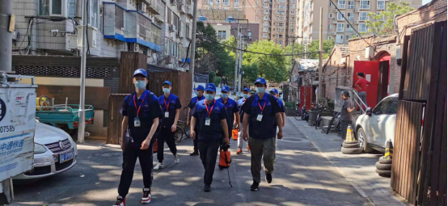

物业园区病媒消杀防治
物业写字楼大都地处商业区，部分商务楼与餐饮商场连体，周边环境容易吸引老鼠、蟑螂、蚊子和苍蝇等有害生物；根据物业杀虫灭鼠公司时代卫士的多年经验分析，在当前建筑当中，办公楼内部各单元及上下楼层之间电线、网线、中央空调通风管、下水道等过墙孔洞漏洞较多，给老鼠的活动和藏匿提供了便利条件。另外，在空调的作用下，办公区区域内环境的温度保持在15-30摄氏之间，这样的环境不仅给人创造了一个舒适的温度，同时，也给蟑螂创造了一个非常适合生存繁殖与栖息的优良环境，这将导致目前很多办公楼内蟑螂非常严重，特别是德国小蠊已成为办公室的最严重害虫之一。为此，当前写字楼灭鼠和写字楼杀蟑螂是当前许多物业公司最迫切的需求；
虫害危害
1、老鼠咬电线，影响写字楼内租赁单位的用电需求，最终导致客户单位被迫停止办公，存在给租赁单位造成不可估量损失的风险，同时也存在造成电线短路引起的火灾的风险；
2、鼠虫害破坏写字楼内办公固定设施，给企业自身及租户造成直接经济损失；
3、蟑螂也称为电脑害虫，可咬断电脑内的线路造成电脑故障；
4、由于鼠虫害造成各种损失，导致物业本身服务满意度下降，可能引起客户拖延物业服务费事情发生；
5、虫害尸体或排泄物可造成微生物污染，给物业公司或己方带来卫生及污染问题，存在卫生安全隐患；
6、虫害给企业单位造成形象和品牌的伤害。
解决方法
【虫害控制理念】
虫害综合控制理念是一个协同的决策与行动过程，以环境与经济上合理的方式，采取最适当的虫害控制方法和策略，从而实现贵单位总体虫害管理目标。虫害综合控制是通过全面的方式来管理虫害的种群和数量，综合各种策略，以减少害虫的种群和数量，达到可以接受的程度，同时，又能提高环境的质量。
【防制目标】
1.通过现阶段的服务，达成这样一个目的：“为您的业主、员工、客户创建一个安全、舒适健康的生活、工作环境！
2.先进管理：运用先进，专业的技术进行定期检查/监察/控制及建议确保所服务的环境免受有害生物滋扰，减少有害生物入侵的机会.
3.安全第一：敏感区域，为客户提供可行性、有效性的结构防鼠建议，让客户可及时把有害生物入侵风险大大降低；同时，配合一个可持续改善的有害生物计划，让您的员工可以在一个安全健康环境内生活、工作。
【各类有害生物防制方案】
一、鼠类的控制
根据贵单位具体情况，我们拟定的鼠类控制计划从以下几个方面着手：
物理控制
通过在老鼠经常活动的通道（主要是仓库内的电缆线槽、配电室、下水管道、消防门缝隙等）布放粘鼠板，控制老鼠，每次检查，做好记录，随时处理粘捕的鼠尸，并及时更换过期的鼠板。
化学控制
在外围建立的人工鼠站内投放鼠饵，控制住外围老鼠使其不进入建筑物内部。首期服务及常规服务中，消杀服务人员将对围墙内进行巡查，如发现有老鼠活动迹象、鼠洞等，将采取定点投药、封堵等方法。
建筑结构防鼠
1）开始进场灭鼠第一个月内，我公司专业技术人员会对到贵单位进行全面的防鼠结构漏洞勘察，并写出防鼠建议报告。
2）使用一些填缝材料（如聚氨脂类填缝剂、水泥、钢丝球等）对老鼠进入室内的通道及缝隙进行封堵隔离，阻止老鼠进入，以达到最有效的灭鼠效果，以上工作由甲方完成，我们将协助。
清洁卫生的控制
通过我们的建议，将卫生死角清理干净，有效防止老鼠躲藏，营造一个老鼠难以孳生的环境。
二、蟑螂的控制
蟑螂的食物包括人类的所有食品种类，内部蟑螂主要出现在厨房、卫生间、楼层的工作间；这些区域也是我们重点控制的区域。
化学处理
结合贵方当前蟑螂密度稳定的情况，我司将以较安全的灭蟑胶饵及灭蟑颗粒剂进行处理，进行蟑螂密度的维护。定期检查，巩固防治效果：结合贵方反馈，一次灭绝局部的蟑螂有时很难做到，因为可能遗漏了活的卵鞘、漏处理了某个蟑螂的栖息藏身之地、蟑螂对药物不敏感未被杀灭等。因此必须反复检查，发现情况要分析并找出原因作针对性处置，才能长期巩固防治效果，对此我司计划每月在每次作业当中均给予重视。
环境治理
1、蟑螂主要在墙壁的缝隙中藏匿孳生，及时修复破损的建筑结构和设施，堵塞缝隙，尽量减少它的栖息场所。
2、对清洁卫生、建筑结构上的缝隙等问题我公司将在服务报告中提出专业建议。
3、在常规服务中，我们主要以检查预防为主，在暂时没有发现蟑螂踪迹的区域预防性地涂点蟑螂诱饵；如发现有蟑螂成虫我们将采取措施及时杀灭。我们将对蟑螂容易孳生的卫生条件差的环境进行检查，提出专业建议。
4、对厨房等蟑螂风险较高的部位，针对性、小范围的进行滞留喷洒，快速灭杀蟑螂针对现场卫生状况书面提交给物业专业有效的清洁改善建议。及时对此处孳生点进行跟进检查，直到彻底清除。

三、飞虫的控制
飞虫的活动具有不确定性、范围比较大、且不容易捕杀。基于以上特殊性，飞虫控制需要更多的合作来尽可能减少飞虫危害。
A、防制原则
1）定期监测；
2）治本清源，将蚊子容易孳生的水源清理干净；
3）适当采取化学方法进行杀灭。
B、化学处理
1）日常对部分区域（如垃圾房）采用超低容量喷雾法杀灭蚊子。
2）对部分区域（如机房、集水井、地下室连接室内通道口）采用滞留喷洒，以控制刚孳生或入侵的飞虫及爬虫；
3）对于飞虫孳生的水源尽量清理，如不能清理，在水源地投放灭蚊幼剂，控制蚊子孳生。
4）在由水体地方，投放灭孑孓缓释剂（生物药剂）。
C、环境治理
清理积水、污水源、清洁卫生
【环境防制建议】
绝大多数的虫害孳生源都在外围环境，当外围温度及天气发生变化时（如温度忽高忽低、大风及雨天等）或虫害的生理需求（寻找食物及栖息场所），都会通过不同的通道向室内扩撒（如门、窗、孔洞等），因此，只有采取有效地防护措施结合虫害的综合治理，才能有效地控制虫害的数量。防护措施包括：
1、通往室外的安全门的下沿离地不大于0.6厘米（防鼠）；
2、通往室外的孔、洞、缝隙尽量堵死，抹平，封严；（发现有部分空调穿线处孔洞较大未及时封堵）
3、对各个区域的下水地漏加盖，防治蟑螂从下水管路侵入室内。
4、部分虫害的繁殖离不开水，室内尽量减少积水，保持通风干燥；
5、垃圾应装袋投入在密闭的垃圾箱内，日产日清，并保持垃圾箱（桶）和周围环境整洁。

 扫一扫 关注我们
扫一扫 关注我们